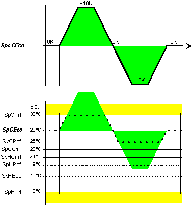
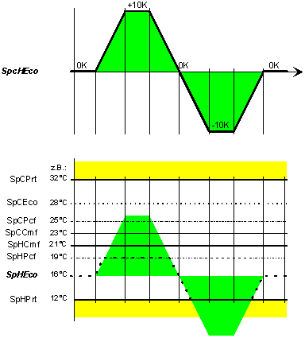
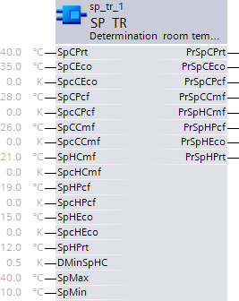

SP_TR：确定室温设定值
由于设定值修正，SP_TR (FB488) 块具有多个设定值。
SP_TR 块允许集中定义房间设定点（用于所有操作模式下的供暖和制冷）。这里，使用一个或多个校正值来更新房间设定点。 SP_TR_SiUn (FB488)、SP_TR_UsUn (FB797)
功能性
该块中集成了以下功能：
- Correction for room setpoints for Comfort, Pre-Comfort, and Economy (heating, cooling).
- Adjustment of dependent room setpoints based on the setpoint shift model.
该模块根据有效设定点修正和设定点偏移模型计算所有当前房间设定点。
| Process |
1 | 舒适的供暖设定点。 [PrSpHCmf] = [SpHCmf] + [SpcHCmf]. 上限为 [SpCPrt] - [DMinSpHC]； the lower limit is [SpHPrt].示例 1：通过 [SpcHCmf] 修正设定值。 |
2 | 舒适的冷却设定值。 [PrSpCCmf] = [SpCCmf] + maximum of ([SpcCCmf], [SpcHCmf]). 上限为[SpCPrt]；下限为 [PrSpHCmf] + [DMinSpHC]。示例 2：通过 [SpcCCmf] 修正设定值。
|
3 | Pre-Comfort 的冷却设定值。 [PrSpCPcf] = [SpCPcf] + maximum of ([SpcCCmf], [SpcCCmf], [SpcHCmf]). 上限为[SpCPrt]；下限为 [PrSpCCmf]。示例 3：通过 [SpcCCmf] 修正设定值。
类似：[SpcCCmf]。示例 2：通过 [SpcCCmf] 修正设定值。 |
4 | 经济冷却设定值。 [PrSpCEco] = [SpCEco] + [SpcCEco]. Or if [PrSpCPcf] > [SpCEco]: [PrSpCEco] = [SpCEco] + maximum of ([SpcCEco], [SpcCCmf], [SpcCCmf], [SpcHCmf]). 上限为[SpCPrt]；下限为 [PrSpCPcf]。示例 4：通过 [SpcCEco] 修正设定值。
类似：[SpcCCmf]。示例 2：通过 [SpcCCmf] 修正设定值。 类似：[SpcCCmf]。示例 3：通过 [SpcCCmf] 修正设定值。 |
5 | Pre-Comfort 的加热设定点。 [PrSpHPcf] = [SpHPcf] + [SpcHPcf]. 上限为[SpCCmf]；下限为 [SpHPrt]。示例 5：通过 [SpcHPcf] 修正设定值。
|
6 | 经济供暖设定值。 [PrSpHEco] = [SpHEco] + [SpcHEco]. Or if [PrSpHPcf] > [SpHEco]: [PrSpHEco] = [SpHEco] + minimum of ([SpcHPcf], [SpcHCmf]). 上限为[SpHPcf]；下限为 [SpHPrt]。示例 6：通过 [SpcHEco] 修正设定值。 |
示例 1：通过 [SpcHCmf] 修正设定值

计算规则：
- The cooling setpoints [PrSpCCmf], [PrSpCPcf] are raised by [SpcHCmf].
- The heating setpoint [PrSpHPcf] is lowered by [SpcHCmf].
- The cooling setpoint [PrSpCEco] is raised along [PrSpCPcf]. The heating setpoint [PrSpHEco] is lowered along [PrSpHPcf].
- [SpCPrt] and [SpHPrt] limit all present setpoints [PrSp...].
- The difference between [PrSpCCmf] and [PrSpCPcf], or between [PrSpHCmf] and [PrSpHPcf] becomes smaller only at the limits [SpCPrt] or [SpHPrt].
- The difference between [PrSpHCmf] and [PrSpCCmf] is always the equal or greater to [DMinSpHC]. Accordingly, [PrSpHCmf] has an upper limit.
示例 2：通过 [SpcCCmf] 修正设定值

计算规则：
- The cooling setpoint [PrSpCPcf] is raised by [SpcCCmf].
- The cooling setpoint [PrSpCEco] is raised along [PrSpCPcf].
- [SpcCCmf] does not influence the heating setpoints [PrSpH...].
- [SpCPrt] and [SpHCmf] + [DMinSpHC] limit [PrSpCCmf].
- The difference between [PrSpCCmf] and [PrSpCPcf] becomes smaller only at the limit [SpCPrt].
- The difference between [PrSpHCmf] and [PrSpCCmf] is always the equal or greater to [DMinSpHC]. Accordingly, [PrSpCCmf] has a lower limit.
示例 3：通过 [SpcCCmf] 修正设定值

计算规则：
- The cooling setpoint [PrSpCEco] is raised along [PrSpCPcf].
- [SpcCCmf] does not influence the heating setpoints [PrSpH...] and [PrSpCCmf].
- [SpCPrt] and [SpCCmf] limit [PrSpCPcf].
示例 4：通过 [SpcCEco] 修正设定值

计算规则：
- [SpcCEco] does not influence the heating setpoints [PrSpH...] and [PrSpCCmf], [PrSpCPcf].
- [SpCPrt] and [SpCPcf] limit [PrSpCEco].
示例 5：通过 [SpcHPcf] 修正设定值

计算规则：
- The cooling setpoint [PrSpHEco] is lowered along [PrSpHPcf].
- [SpcHPcf] does not influence the cooling setpoints [PrSpC...] and [PrSpHCmf].
- [SpHCmf] and [SpHPrt] limit [PrSpHPcf].
示例 6：通过 [SpcHEco] 修正设定值

计算规则：
- [SpcHEco] does not influence the cooling setpoints [PrSpC...] and [PrSpHCmf], [PrSpHPcf].
- [SpHPcf] and [SpHPrt] limit [PrSpHEco].
示例 7：通过 [SpcHCmf] 和 [SpcCCmf] 同时修正设定值
下图显示了 [PrSpHCmf] 和 [PrSpCCmf] 同时平行移动相同值期间的行为（具有机械存储锁定状态的旋钮的典型行为）。

由于 [PrSpHCmf] 是管理器（首先计算），因此它会在计算之前移动所有上部曲线。

输入
Pin | E | Description |
SpCPrt | pa | 用于保护的冷却设定值。 条件：[SpCPrt] <= [SpMax]，且 [SpCPrt] >= [SpHPrt] + [DMinSpHC]。 |
SpCEco | pa | 经济型冷却设定值。 Condition: [SpCEco] <= [SpCPrt], and [SpCEco] >= [SpCPcf]. |
SpcCEco | pa | 经济性冷却设定值修正 |
SpCPcf | pa | 预舒适的冷却设定值。 Condition: [SpCPcf] <= [SpCPrt], and [SpCPcf] >= [SpCCmf]. |
SpcCPcf | pa | 用于预舒适的冷却设定点修正 |
SpCCmf | pa | 舒适的冷却设定值。 Condition: [SpCCmf] <= [SpCPrt], and [SpCCmf] >= [SpHCmf] + [DMinSpHC]. |
SpcCCmf | pa | 冷却设定点修正以提高舒适度 |
SpHCmf | pa | 舒适的供暖设定值。 Condition: [SpHCmf] >= [SpHPrt], and [SpHCmf] <= [SpCCmf] - [DMinSpHC]. |
SpcHCmf | pa | 供暖设定点修正以提高舒适度 |
SpHPcf | pa | 预舒适加热设定值。 Condition: [SpHPcf] >= [SpHPrt], and [SpHPcf] <= [SpHCmf]. |
SpcHPcf | pa | 用于预舒适的加热设定值修正 |
SpHEco | pa | 经济供暖设定值。 Condition: [SpHEco] >= [SpHPrt], and [SpHEco] <= [SpHPcf]. |
SpcHEco | pa | 经济性供暖设定值修正 |
SpHPrt | pa | 用于保护的加热设定值。 条件：[SpHPrt] >= [SpMin]，且 [SpHPrt] <= [SpMax] - [DMinSpHC]。 |
DMinSpHC | pa | Delta 最小加热-冷却设定点 最高加热设定值和最低冷却设定值之间的最小差异。 |
SpMax | pa | 最大设定值。 当前设定值 [Pr...] 不得超过的最大设定值。 |
SpMin | pa | 最小设定值。 当前设定值 [Pr...] 不得超过的最小设定值。 |
输出
Pin | E | Description |
PrSpCPrt | a | 当前用于保护的冷却设定值。 |
PrSpCEco | a | 当前的经济冷却设定值。 |
PrSpCPcf | a | 当前预舒适的冷却设定值。 |
PrSpCCmf | a | 当前舒适的冷却设定值。 |
PrSpHCmf | a | 当前舒适的供暖设定值。 |
PrSpHPcf | a | 当前预舒适的加热设定点。 |
PrSpHEco | a | 当前经济供暖设定值。 |
PrSpHPrt | a | 当前用于保护的加热设定值。 |
输入值
Pin | Description | Data Type | Default value | E.g. Engineering unit or Text group | Min. | Max. |
SpCPrt | 设置冷却保护 | 真实的 | 40.0 | °C | 0.0 | 50.0 |
104.0 | °F | 32.0 | 122.0 | |||
SpCEco | 设定点冷却经济性 | 真实的 | 35.0 | °C | 0.0 | 50.0 |
95.0 | °F | 32.0 | 122.0 | |||
SpcCEco | Setp.corr.冷却经济性 | 真实的 | 0.0 | K | -10.0 | 10.0 |
0.0 | °F | -36.0 | 36.0 | |||
SpCPcf | Setp.冷却预舒适 | 真实的 | 28.0 | °C | 0.0 | 50.0 |
82.0 | °F | 32.0 | 122.0 | |||
SpcCPcf | Setp.corr.cool.预舒适 | 真实的 | 0.0 | K | -10.0 | 10.0 |
0.0 | °F | -36.0 | 36.0 | |||
SpCCmf | 设定点冷却舒适度 | 真实的 | 26.0 | °C | 0.0 | 50.0 |
79.0 | °F | 32.0 | 122.0 | |||
SpcCCmf | Setp.corr.冷却舒适度 | 真实的 | 0.0 | K | -10.0 | 10.0 |
0.0 | °F | -36.0 | 36.0 | |||
SpHCmf | 设定点加热舒适度 | 真实的 | 21.0 | °C | 0.0 | 50.0 |
70.0 | °F | 32.0 | 122.0 | |||
SpcHCmf | Setp.corr.供暖舒适度 | 真实的 | 0.0 | K | -10.0 | 10.0 |
0.0 | °F | -36.0 | 36.0 | |||
SpHPcf | Setp.加热预舒适 | 真实的 | 19.0 | °C | 0.0 | 50.0 |
66.0 | °F | 32.0 | 122.0 | |||
SpcHPcf | Setp.corr.heat.预舒适 | 真实的 | 0.0 | K | -10.0 | 10.0 |
0.0 | °F | -36.0 | 36.0 | |||
SpHEco | 设定点供热经济性 | 真实的 | 15.0 | °C | 0.0 | 50.0 |
59.0 | °F | 32.0 | 122.0 | |||
SpcHEco | Setp.corr.供暖经济 | 真实的 | 0.0 | K | -10.0 | 10.0 |
0.0 | °F | -36.0 | 36.0 | |||
SpHPrt | 设置加热保护 | 真实的 | 12.0 | °C | 0.0 | 50.0 |
54.0 | °F | 32.0 | 122.0 | |||
DMinSpHC | Delta 最低热-冷设定值 | 真实的 | 0.5 | K | 0.0 | 10.0 |
1.0 | °F | 0.0 | 18.0 | |||
SpMax | 最大设定值 | 真实的 | 40.0 | °C | 0.0 | 50.0 |
104.0 | °F | 32.0 | 122.0 | |||
SpMin | 最小设定值 | 真实的 | 10.0 | °C | 0.0 | 50.0 |
50.0 | °F | 32.0 | 122.0 |
输出值
Pin | Description | Data Type | Default value | E.g. Engineering unit or Text group | Min. | Max. |
PrSpCPrt | 加压冷却设定保护 | 真实的 | 0.0 | °C | 0.0 | 50.0 |
0.0 | °F | 0.0 | 122.0 | |||
PrSpCEco | 预设冷却经济性 | 真实的 | 0.0 | °C | 0.0 | 50.0 |
0.0 | °F | 0.0 | 122.0 | |||
PrSpCPcf | Pres.setp.cool.pre-comfort | 真实的 | 0.0 | °C | 0.0 | 50.0 |
0.0 | °F | 0.0 | 122.0 | |||
PrSpCCmf | 预设冷却舒适度 | 真实的 | 0.0 | °C | 0.0 | 50.0 |
0.0 | °F | 0.0 | 122.0 | |||
PrSpHCmf | 预设加热舒适度 | 真实的 | 0.0 | °C | 0.0 | 50.0 |
0.0 | °F | 0.0 | 122.0 | |||
PrSpHPcf | 预设加热预舒适 | 真实的 | 0.0 | °C | 0.0 | 50.0 |
0.0 | °F | 0.0 | 122.0 | |||
PrSpHEco | 预设供暖经济 | 真实的 | 0.0 | °C | 0.0 | 50.0 |
0.0 | °F | 0.0 | 122.0 | |||
PrSpHPrt | 预热定型保护 | 真实的 | 0.0 | °C | 0.0 | 50.0 |
0.0 | °F | 0.0 | 122.0 |
工程
Interconnection sample for summer/winter compensation and room operator unit with knob

应用
Summer/winter compensation
Summer/winter 补偿的设定值修正可以直接互连。
Room operator unit with knob
基本功能：接受来自相关房间控制器的请求信号并将其映射到风门位置设定点；在将结果作为命令输出到控制供应风门位置的对象之前，将结果传递给设备模式逻辑开关。
过程响应
标准（参见General rules and information).
故障排除
标准（参见General rules and information).